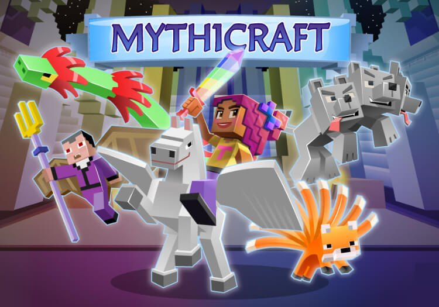

Thirty years making things move. Now I design how people learn from them.
I'm a multimedia artist and designer in East Tennessee. Illustration, motion, 3D and game art for Jellyvision, Jackbox Games and Tynker — and now Senior Learning Experience Design at Cirrus Aircraft, where I lead AI research and development and own training from the first interview to delivery.
- 1998
- First 3D character, broadcast on national television
- 9.4M
- Views on the Mythicraft reel, Tynker
- 18M
- Employees reached at Jellyvision, 114 of the Fortune 500
- Six
- Aircraft systems courses delivered into the Cirrus LMS
Selected work
Six of seven
02 The Devils and the Details Jackbox Games Contract artist on the party game — character design, environments and interactive assets, drawn at a pace the schedule did not leave room to miss. 03
Coding Fun, One Logo at a Time
Tynker
A hundred-plus thumbnail cards for the web and mobile app. Each one is the entry
point to a lesson, so each one has to say what the lesson is before it asks for the
tap.
03
Coding Fun, One Logo at a Time
Tynker
A hundred-plus thumbnail cards for the web and mobile app. Each one is the entry
point to a lesson, so each one has to say what the lesson is before it asks for the
tap.
 04
Blog Images
Jellyvision
A long run of illustrations for the ALEX benefits blog — turning deductibles, HSAs
and open enrolment into something a person will actually stop and look at.
04
Blog Images
Jellyvision
A long run of illustrations for the ALEX benefits blog — turning deductibles, HSAs
and open enrolment into something a person will actually stop and look at.
 05
One Capture, Two Deliverables
Cirrus Aircraft
One screen recording becomes an LMS lesson and a narrated video, both carrying the
same voice track. Six courses shipped this way, with an automated gate tracing every
published word back to the expert who said it.
05
One Capture, Two Deliverables
Cirrus Aircraft
One screen recording becomes an LMS lesson and a narrated video, both carrying the
same voice track. Six courses shipped this way, with an automated gate tracing every
published word back to the expert who said it.
 06
ELL Teaching Moment
Volunteer
A ten-minute interactive lesson for adult English learners — five language groups in
one room, built picture-first so nobody has to read to begin.
06
ELL Teaching Moment
Volunteer
A ten-minute interactive lesson for adult English learners — five language groups in
one room, built picture-first so nobody has to read to begin.

How I work
Three thingsI started in 3D in 1998, modelling characters for films that went out on national television. That taught me to think in space before I think in layers — and it is still how I plan a frame, a lesson or a page.
The last two years I have spent teaching generative tooling to carry an idea from first concept to finished product without losing the hand that made it. That is what I do at Cirrus now, and it is the part I would bring to your team first.
Design & illustration
Vector illustration, logos and identity, layout and brand systems. Illustrator, Photoshop, Affinity, Figma.
Motion, 3D & game art
After Effects, Animate, Premiere, Spine rigging, storyboards and explainer video. Thirty years of 3D behind all of it.
Learning design & AI R&D
Subject-matter interviews through storyboard, build and SCORM delivery — plus the generative workflows that make the pace possible.
What people say
All six references“Jellyvision was the very lucky home for Yoshi's artistic excellence for almost nine years. He knows how to handle high volume, high pressure project work as well as iterative product work — two different mindsets.”
“Someone who reliably brought clever ideas to the table, and nailed the landing when it came to execution, often on his first stab at it. Can't recommend him enough.”
“He was always on the forefront of figuring out how to adapt our art for the constantly-evolving web landscape, and how to streamline the process of creating it.”
Career
1998 — nowLet's talk
Reply within a dayHiring, commissioning, or just working out whether I'm the right fit — write to me directly and you'll get a person, not a funnel.
yoshi.sakaguchi@gmail.com